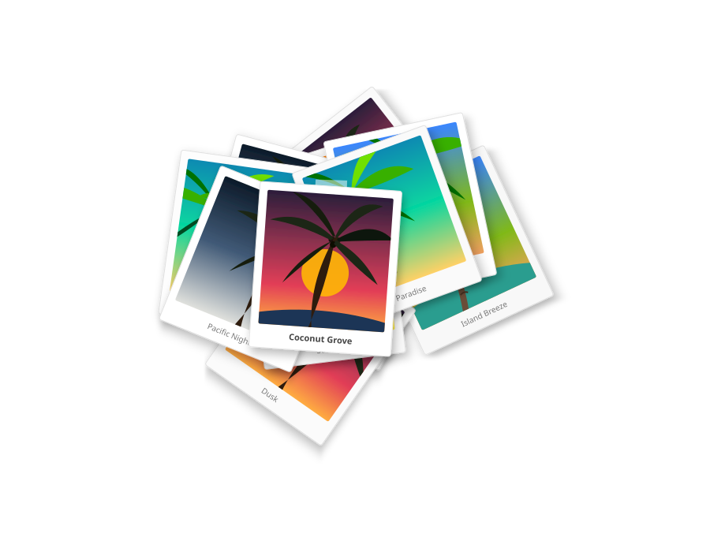

Automated Detection of Coconut Rhinoceros Beetle Damage in Images
Aubrey Moore and Sulav Paudel

Previous Presentation on This Topic
Flowchart
%%{init: {'theme': 'dark', 'themeVariables': { 'darkMode': true }}}%%
flowchart TD
A[Start] --> B{Is it?};
B -- Yes --> C[OK];
C --> D[Rethink];
D --> B;
B -- No ----> E[End];
flowchart LR A[Input] --> B[] --> C[Output]